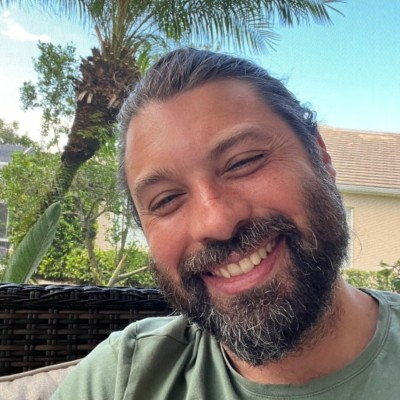
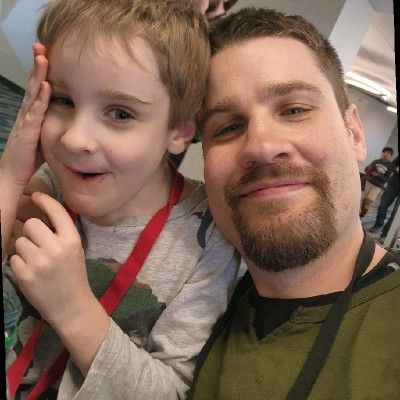

Build for operators
Blackridge is designed for the platform and infrastructure teams responsible for production behavior, reliability, and cost.
Northwatch is a founder-led infrastructure company building Blackridge to make the ownership, runtime behavior, and economics of production AI systems inspectable.
Founded in 2026 · Approximately 50 years of combined systems and infrastructure experience
We have spent our careers operating systems where reliability, cost, security, and ownership are non-negotiable. We started Northwatch after seeing AI workloads become production infrastructure faster than teams gained the evidence needed to explain their runtime behavior and economics.
Blackridge is designed for the platform and infrastructure teams responsible for production behavior, reliability, and cost.
Economic findings should remain connected to request evidence, attribution, pricing context, confidence, and coverage.
Blackridge begins by observing, explaining, and recommending. Broader controls should follow only after the evidence is trusted.
Northwatch is led directly by its founders. The experience below is included as biographical context and does not imply endorsement by prior employers.

Geoffrey is an infrastructure engineer and technology leader with roughly 25 years of experience building and operating reliability-critical systems. At IBM, he worked on grid-compute infrastructure supporting semiconductor engineering. At Ntrepid, he led R&D for security and intelligence systems operating in adversarial environments. His later work spans real-time data platforms, cybersecurity telemetry, Kubernetes, SRE, and early-stage product development.

Daniel is a platform and distributed-systems leader with roughly 25 years of experience across infrastructure automation, Go, Kubernetes, microservices, networking, and operational resilience. As a Principal Architect at Comcast, he led service-mesh, developer-platform, reliability, and infrastructure initiatives. At PENN Entertainment, he led distributed-services architecture for a regulated platform operating across millions of users and multiple jurisdictions.
Northwatch is an early-stage company building Blackridge with selected design partners. The Runtime Economics Assessment is offered at no cost to accepted partners in exchange for a well-scoped production workflow, agreed evidence access, technical participation, and direct product feedback.
Every assessment request is reviewed by a Northwatch founder, with a response within 24 hours.
Design partners work with the people making product and architecture decisions, without a handoff through a generic sales process.
The engagement begins with one workflow and expands only when the findings support an ongoing Blackridge deployment.